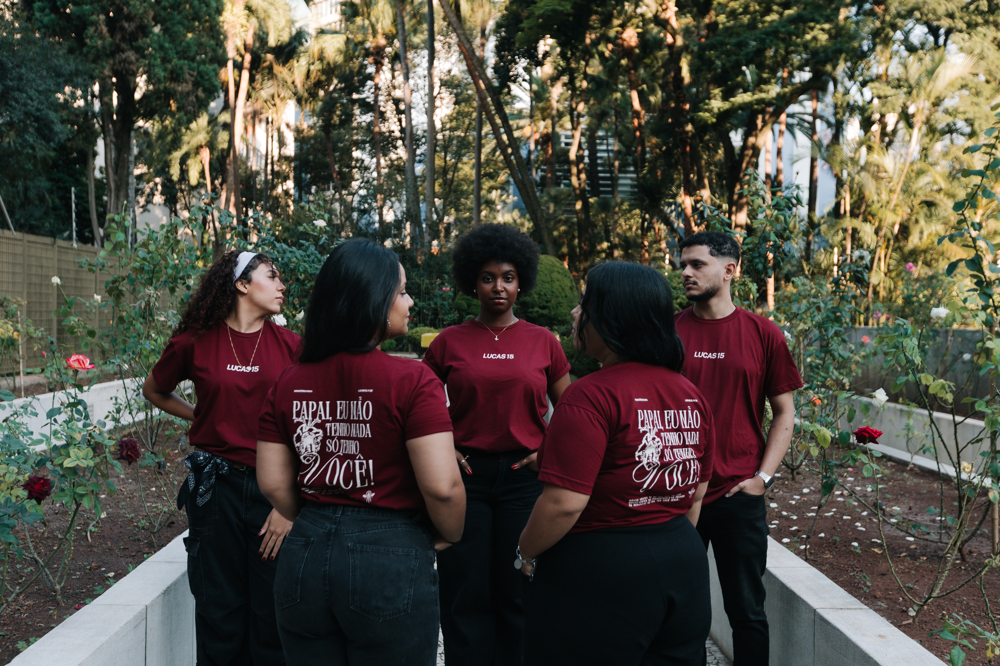
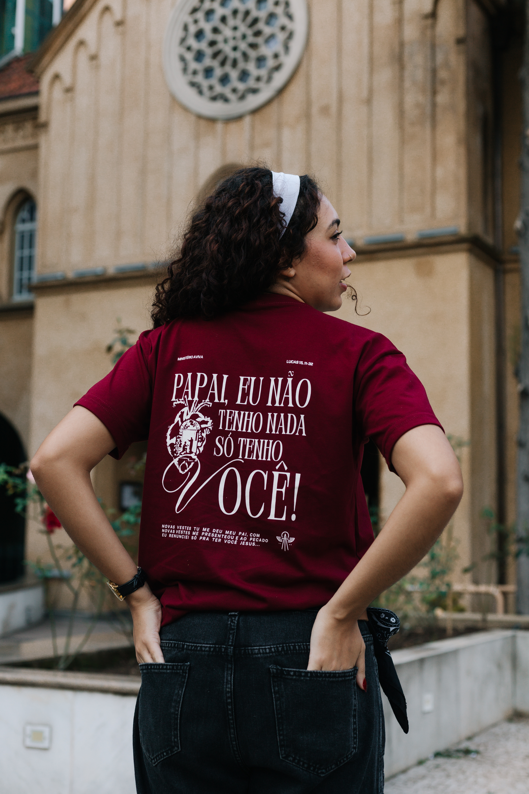
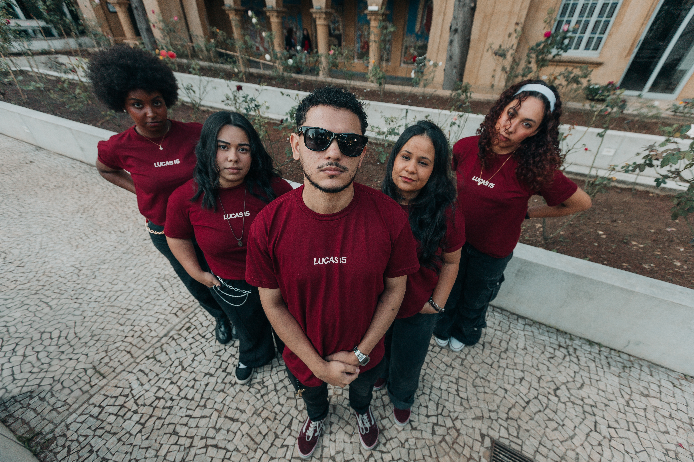
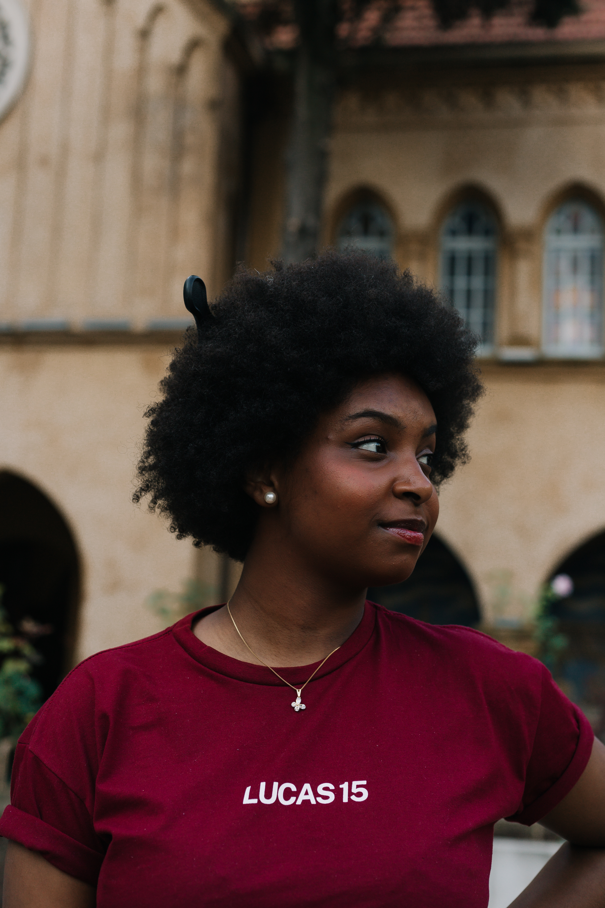

Leve o Aviva para sua comunidade
Conte a data, o formato e a necessidade pastoral. A equipe retorna pelo WhatsApp para alinhar agenda, estrutura e proposta da missão.
Falar no WhatsAppLucas 15 / missão jovem
O Aviva nasce para reacender corações com uma presença jovem, católica e real. Música, palavra, serviço e identidade para comunidades que querem viver a missão com profundidade e coragem.

Conte a data, o formato e a necessidade pastoral. A equipe retorna pelo WhatsApp para alinhar agenda, estrutura e proposta da missão.
Falar no WhatsApp
A agenda reúne encontros cadastrados pela equipe e permite salvar cada compromisso no calendário do celular, Google Agenda, Apple Calendar ou Outlook.
Abrir community
Nova camisa
A nova camisa do Aviva carrega a espiritualidade de Lucas 15 em uma peça vinho, forte e direta. Uma veste de retorno, entrega e pertença para quem quer levar essa mensagem no corpo e na missão.
Entrar em contatoCultura de encontro
Da paróquia à missão, o Aviva carrega uma estética de presença: olhar firme, escuta, serviço e uma mensagem que chama de volta para casa.


Últimas missões